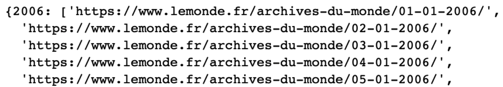
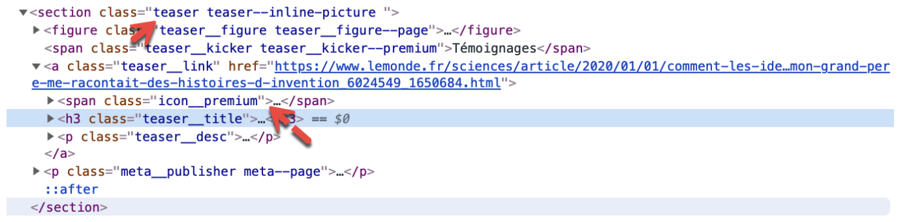
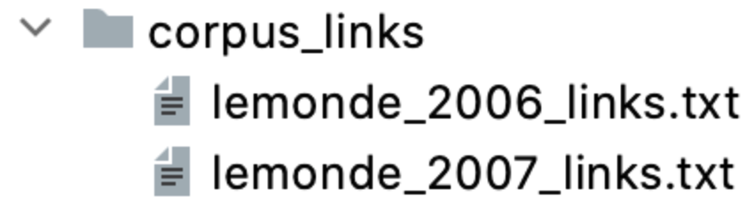
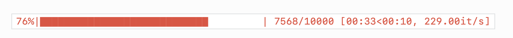

Complete tutorial on scraping French news from Le Monde 🇬🇧¶
Why you need web scraping and why I wrote this tutorial¶
Sooner or later in your career you will find yourself in a situation where you need to build your own corpus for common nlp tests.
Some days ago I wrote a tutorial on scraping news on the French journal le monde. I didn’t finish the whole tutorial and today while refreshing some web scraping skills I find the best way to keep a personal knowledge base is writing complete, well documented tutorials. It creates a more robuste and contextualised documentation (like Bert :D) than simply commenting code.
Legal issues¶
Note that web scraping can cause some legal issues. I just provide a coding tutorial here, please use it at your own risk and read some articles like this one.
Get article links¶
So the first thing to do is to generate archive links, basically an archive link is a page on which we can scrape article links. For instance, the link https://www.lemonde.fr/archives-du-monde/01-01-2020/ contains all the articles published for 2020–01–01. Here I create the function create_archive_link which requires starting year/month/day and ending year/month/day as input. The output is a dictionary in the form of year:links.
def create_archive_links(year_start, year_end, month_start, month_end, day_start, day_end):
archive_links = {}
for y in range(year_start, year_end + 1):
dates = [str(d).zfill(2) + "-" + str(m).zfill(2) + "-" +
str(y) for m in range(month_start, month_end + 1) for d in
range(day_start, day_end + 1)]
archive_links[y] = [
"https://www.lemonde.fr/archives-du-monde/" + date + "/" for date in dates]
return archive_links
Example output of create_archive_links(2006,2020,1, 12, 1, 31):

The next step is to get all the article links on the archive page. For this you need 3 modules: HTTPError to handle exceptions, urlopen to open webpages and BeautifulSoup to parse webpages.
The magic power of exception handling¶
The exception handling is necessary because we have archive pages for dates like 02–31, it’s much easier to handle exceptions than generating links corresponding only to existent dates. Each article is in a <section> having a class named teaser.
I also filter out all the non-free articles having a span with class icon__premium. All the links containing the word en-direct are also filtered because they are videos. This is to say that web scraping requires not only programming skills but also some elementary web analysis.

from urllib.error import HTTPError
from urllib.request import urlopen
from bs4 import BeautifulSoup
def get_articles_links(archive_links):
links_non_abonne = []
for link in archive_links:
try:
html = urlopen(link)
except HTTPError as e:
print("url not valid", link)
else:
soup = BeautifulSoup(html, "html.parser")
news = soup.find_all(class_="teaser")
# condition here : if no span icon__premium (abonnes)
for item in news:
if not item.find('span', {'class': 'icon__premium'}):
l_article = item.find('a')['href']
# en-direct = video
if 'en-direct' not in l_article:
links_non_abonne.append(l_article)
return links_non_abonne
You don’t want to scrape more than once¶
Since no body wants to scrape the same links again and again (they are not very likely to change), a handy function can be created to save links into files. Here the publication year is used to name files.
def write_links(path, links, year_fn):
with open(os.path.join(path + "/lemonde*" + str(year_fn) + "\_links.txt"), 'w') as f:
for link in links:
f.write(link + "\n")
article_links = {}
for year,links in archive_links.items():
print("processing: ",year)
article_links_list = get_articles_links(links)
article_links[year] = article_links_list
write_links(corpus_path,article_links_list,year)
This would produce something like this:

Let’s scrape¶
Now you can scrape article contents, it’s surprisingly straightforward. In fact you just need to get all the h1,h2 and p elements. The recursive=False is important here because you don’t want to dig any deeper once you find the text at some first level.
For concerns of modularity you should first write a function to scrape a single page.
def get_single_page(url):
try:
html = urlopen(url)
except HTTPError as e:
print("url not valid", url)
else:
soup = BeautifulSoup(html, "html.parser")
text_title = soup.find('h1')
text_body = soup.article.find_all(["p", "h2"], recursive=False)
return (text_title, text_body)
Let’s say you need to classify news by theme (which is very common in text classification tasks), you can use the following function to extract themes from links. For example the link https://www.lemonde.fr/politique/article/2020/01/01/reforme-des-retraites-macron-reste-inflexible-aucune-issue-ne-se-profile_6024550_823448.html contains the keyword politique meaning politics in French.
def extract_theme(link):
try:
theme_text = re.findall(r'.fr/.*?/', link)[0]
except:
pass
else:
return theme_text[4:-1]
You can also get the top n themes.
themes = []
def list_themes(links):
themes = []
for link in links:
theme = extract_theme(link)
if theme is not None:
themes.append(theme)
return themes
from collections import Counter
theme_stat = Counter(themes)
theme_top = []
for k,v in sorted(theme_stat.items(), key = lambda x:x[1], reverse=True):
if v > 700:
theme_top.append((k, v))
themes_top_five = [x[0] for x in theme_top[:5]]
Now you need to have the links corresponding to the top 5 themes, so:
from collections import defaultdict
def classify_links(theme_list, link_list):
dict_links = defaultdict(list)
for theme in theme_list:
theme_link = 'https://www.lemonde.fr/' + theme + '/article/'
for link in link_list:
if theme_link in link:
dict_links[theme].append(link)
return dict_links
all_links = []
for link_list in article_links.values():
all_links.extend(link_list)
themes_top_five_links = classify_links(themes_top_five,all_links)
It’s time to scrape all the articles that you need. Typically you would want to save all the scraped text in a folder. Note that this function takes a dictionary object with theme as key and corresponding links as value. For example here is a dict example for the top 5 themes.
links_dict = {key: value for key, value in themes_top_five_links.items()
}
Finally, you can scrape ! Note the tqdm around range, since the whole scraping process could be quite long, you need to keep track of the progress so that you know it’s always running. See how to use tqdm here https://tqdm.github.io/. Below is a progress bar example copied from the official documentation.

def scrape_articles(dict_links):
themes = dict_links.keys()
for theme in themes:
create_folder(os.path.join('corpus', theme))
print("processing:", theme)
#### note the use tqdm
for i in tqdm(range(len(dict_links[theme]))):
link = dict_links[theme][i]
fn = extract_fn(link)
single_page = get_single_page(link)
if single_page is not None:
with open((os.path.join('corpus', theme, fn + '.txt')), 'w') as f:
# f.write(dict_links[theme][i] + "\n" * 2)
f.write(single_page[0].get_text() + "\n" * 2)
for line in single_page[1]:
f.write(line.get_text() + "\n" * 2)
Now that you get all the articles as txt, here is a function allowing you to extract any number of texts from each folder. The default number is set to 1000 here.
def cr_corpus_dict(path_corpus, n_files=1000):
dict_corpus = defaultdict(list)
themes = os.listdir(path_corpus)
for theme in themes:
counter = 0
if not theme.startswith('.'):
theme_directory = os.path.join(path_corpus, theme)
for file in os.listdir(theme_directory):
if counter < n_files:
path_file = os.path.join(theme_directory, file)
text = read_file(path_file)
dict_corpus["label"].append(theme)
dict_corpus["text"].append(text)
counter += 1
return dict_corpus
Resources¶
Here you are. Happy scraping! And mind the potential legal issues!
You can find source code here.